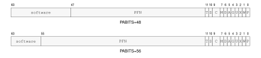

Memory Address Translation
Memory address translation is a separate pipeline after effective-address calculation. Effective-address evaluation produces an address value or operand designator; segmentation optionally turns that value into a linear address, and paging optionally turns the linear address into a memory-system address.
Instruction fetches use CS, stack accesses use SS, and ordinary data accesses use the operation default data segment unless an effective-address form explicitly selects another segment. SP and PC forms use their fixed segments.
SEGLEA exposes the linear address produced by segment pre-translation when software explicitly needs it. Its instruction description defines the point check, FLAGS result, destination suppression, and auto-update commit behavior. SEGLEA applies segment pre-translation to the computed starting point.

Address Translation Pipeline
Segment Pre-Translation
Segment pre-translation interprets the selected 64-bit segment image before paging. The segment fields, derived quantities, and image-validity condition are defined in Segment Registers. A disabled segment passes the effective address through. An enabled segment either checks the effective address as an offset and adds the base, or checks an already-linear address in bounds-only mode.
Segment Pre-Translation Modes
| Mode | Segment State | Check | Linear Address |
|---|---|---|---|
| disabled | m = 0 | no segment-window check | linear = EA |
| translated window | m != 0, b = 0 | starting point \(0 \le \mathrm{EA}<\mathrm{span}\); complete range selected by leaf AT |
linear = base + EA |
| bounds-only window | m != 0, b = 1 | starting point \(\mathrm{base}\le\mathrm{EA}<\mathrm{limit}\); complete range selected by leaf AT |
linear = EA |
Address validation begins by forming the starting EA and its segment-pretranslated linear value. The starting point must be within the selected segment. With paging enabled, the starting linear value must then be canonical and the starting leaf translation is resolved far enough to determine its AT value. That value selects the complete bounds, alignment, translation, and address-type checks described under Leaf Address Types. This ordering defines the reported result. With paging disabled, the ordinary byte-addressed range rules apply.
Complete range additions are mathematical: 64-bit wraparound never makes an out-of-range access valid. A range failure raises PAGE_FAULT before an architectural memory transaction begins.
The segment result is the linear address. With PTCR.PE set, the page-table walker consumes that address and applies the selected PTE frame and attributes. With paging disabled, the memory system receives the complete 64-bit linear address directly as a byte address. PABITS_SEL applies to page-table geometry, while the direct address retains all 64 bits. An invalid segment image raises INVALID_CONTROL_STATE when written; a failed segment bound or canonical-address check raises PAGE_FAULT during access.
Paging Stage
Paging is enabled by PTCR.PE and translates the linear address produced by segment pre-translation. Before the walk can produce a translation, the linear address must be canonical for the mode selected by PTCR.LA57. A noncanonical address raises PAGE_FAULT. With paging disabled, the memory system uses the linear address directly.
Each page-table level uses a nine-bit address field to select one of 512 64-bit entries in a 4-KiB table page. For a table-page base address (B) and index (i), the selected entry is at (B + 8i). The walker starts at the physical table page named by PTCR.root_page. Every selected entry above L1 points to the next table page, and the selected L1 entry is the leaf PTE. Its physical frame number is combined with linear-address bits 11..0 to form the memory-system address. The leaf AT bit determines whether that value is a byte address or a slot address:
The walker validates every consumed entry and accumulates its permissions while descending toward L1. The leaf PTE supplies the final frame number and memory attributes. The detailed entry-validity, permission, accessed, and dirty rules are specified under Page-Table Entry Format. At each consumed level, result priority is not-present first, structural validity second, and accumulated permission third; the walker resolves those results before consuming a lower level.

Linear-Address Paging Fields
LA48 Four-Level Paging
When PTCR.LA57 is zero, bits 63..48 of the linear address must equal the sign extension of bit 47. Bits 47..39, 38..30, 29..21, and 20..12 select the L4, L3, L2, and L1 entries respectively. The twelve low bits are carried unchanged as the offset within the translated 4-KiB page. The L4 table is the root table named by PTCR.root_page.

LA48 Four-Level Page Walk
LA57 Five-Level Paging
When PTCR.LA57 is one, bits 63..57 of the linear address must equal the sign extension of bit 56. Bits 56..48 select an additional L5 entry, whose PFN identifies the L4 table. Bits 47..12 then drive the same L4-through-L1 walk used by LA48, and bits 11..0 remain the page offset. The L5 table is the root table named by PTCR.root_page.

LA57 Five-Level Page Walk
Page-Table Entry Format
Every page-table entry is 64 bits. The low twelve bits contain hardware-defined traversal, permission, and memory attributes. The physical frame number occupies bits PABITS-1..12; bits above the selected physical-address width are available to software and ignored by the page-table walker.

Page-Table Entry Formats
In both rows, S, C, and M abbreviate SW0, CP, and AT; the other labels match the field table.
Page-Table Entry Fields
| Field | Bits | Meaning |
|---|---|---|
P |
0 |
present |
W |
1 |
writable |
X |
2 |
executable |
U |
3 |
user-domain mapping |
G |
4 |
global translation |
A |
5 |
accessed; may be set on a consumed byte-addressed entry, including a speculative traversal; must be one for a slot leaf |
D |
6 |
byte-addressed leaf dirty bit, set exactly when a store or atomic update commits; must be one for a slot leaf |
AT |
7 |
0 byte-addressed leaf; 1 externally acknowledged slot-addressed leaf |
CP |
9..8 |
0 cacheable; 1 uncacheable; 2 write-through; 3 write-combining |
SW0 |
10 |
software-defined and ignored by hardware |
T |
11 |
one for a non-leaf table pointer; zero for an L1 leaf |
PFN |
PABITS-1..12 |
next-table or mapped-page physical frame number |
| software | 63..PABITS |
software-defined and ignored by hardware |
At every level above L1, P and T must both be one; D, G, and AT must be zero. At L1, P must be one and T must be zero. W, X, and U permissions are accumulated across the walk. A reserved or malformed consumed entry raises PAGE_FAULT. Supervisor current-domain access to a user mapping faults; the checked user-domain operations select the user-domain permission path explicitly.
An AT=1 leaf must have CP=1 (uncacheable), X=0, A=1, and D=1. Any AT=1 leaf with inconsistent attributes is a malformed PTE. Because A and D are required to be set in a valid slot leaf, an access never performs a speculative A update or a commit-time D update to that leaf.
When hardware changes A or D from zero to one, it performs a conditional 64-bit atomic read-modify-write of the complete PTE. The update sets only the required A or D bits and preserves every other bit from the current 64-bit value. It succeeds only if the translation-relevant PTE value still matches the value that was validated. If a concurrent write changes that value first, the walker must re-read and revalidate the entry; it must not write back stale PTE fields.
A may be set after a structurally valid entry is consumed by a speculative walk even when the initiating instruction is later squashed or faults after that traversal. D is exact rather than speculative: a failed, squashed, permission-denied, or non-storing operation must not change D. A store or successful atomic memory update may become architecturally visible only if any required D update also succeeds. PTQUERY and VTOP retain their instruction-specific rule that they never modify A or D.
Translation-Cache Identity and Invalidation
A translation-cache entry is identified by the components below. PTCR root_page is not a hardware tag. While ASCR.AE is one, system software binds one ASID to one PTCR root and translation geometry; it completes the required shootdown before reusing that ASID for a different PTCR image. While AE is zero, the current untagged context is invalidated when PTCR changes.
Translation-Cache Entry Identity
| Identity Component | Applies To |
|---|---|
linear page |
every entry |
LA57 and PABITS_SEL |
every entry |
ASID |
non-global entry while ASCR.AE is one |
Local Translation-Cache Transitions
| Operation | Non-Global Entries | Global Entries |
|---|---|---|
WRCR PTCR with changed root_page |
invalidate all current untagged entries when AE is zero; when AE is one software must invalidate the ASID before rebinding it | preserve only mappings whose complete leaf attributes are identical in every context |
WRCR PTCR with changed LA57 or PABITS_SEL |
invalidate entries using the old translation geometry | invalidate entries using the old translation geometry |
WRCR ASCR changing ASID while AE remains one |
select the new ASID-tagged entries | preserve |
WRCR ASCR changing AE |
invalidate the old untagged context or select the new tagged context as applicable | preserve |
SWPT |
install PTCR and invalidate the current untagged context | preserve only identical global mappings |
SWPTA |
install PTCR and ASCR and select the new ASID-tagged context | preserve only identical global mappings |
INVPAGE |
invalidate the addressed page for the current ASID, or the current untagged context when AE is zero | invalidate the addressed global page |
INVASID |
invalidate every entry tagged with the selected ASID | preserve |
INVTLB |
invalidate every local entry | invalidate every local entry |
Remote Translation Shootdown Protocol
| Step | Required Action |
|---|---|
| 1 | PTE store |
| 2 | AFENCE |
| 3 | local invalidate |
| 4 | release shootdown request |
| 5 | target acquire and local invalidate |
| 6 | target release acknowledgement |
| 7 | updater acquire of every acknowledgement |
| 8 | AFENCE |
| 9 | reclaim or reuse |
A global leaf ignores ASID matching. Its PFN, accumulated permissions, CP, and AT attributes must be identical in every context in which that global entry can be used. Changing any of those attributes requires invalidating the global entry on every target logical processor.
The page-table walker reads page tables as CP0 coherent normal memory. Each 64-bit PTE read observes one coherence version; it does not combine fields from different writes. An in-progress walk may complete with the old or new coherence version, so the updater does not reclaim the old mapping until the complete shootdown protocol finishes. The local invalidation instructions affect only the executing logical processor; the request and acknowledgement steps are ordinary shared-memory communication ordered by the stated release, acquire, and AFENCE operations.
Leaf Address Types and Access Ranges
The leaf AT bit selects the meaning of the low twelve linear-address bits and the memory-system address:
For AT=0, the low bits are a byte offset and a width-\(n\) access covers the half-open interval \([a,a+n)\). For AT=1, the low bits are a slot index and every B, W, L, or Q access covers exactly one addressable unit, \([a,a+1)\). Here \(a\) is the value at the applicable stage: EA for segment bounds, linear address for paging coverage, and byte or slot address after translation. All leaves consumed by an AT=0 byte range must also be byte-addressed; an address-type mismatch raises PAGE_FAULT with cause ADDRESS_TYPE.
An AT=1 transaction carries the slot address, transfer width, read/write direction, and write data. Width does not scale the slot address: for example, Q [0] and Q [1] select distinct slots, and Q [4095] remains one access to the last slot of the leaf. Slot accesses have no byte-alignment rule and no width-induced cross-page condition. Different widths at one slot remain transactions to that same slot; their device-visible relationship is defined by the applicable platform or device contract, not by normal-memory byte aliasing.
Ordinary B, W, L, and Q loads and stores are valid through an AT=1 leaf. Instruction fetch and every atomic read-modify-write through such a leaf raise ADDRESS_TYPE. A prefetch produces no slot transaction. A cache maintenance operation has no slot-side effect. PTQUERY and VTOP report the translation without issuing a slot transaction; VTOP returns the slot address for an AT=1 leaf.
Address type is selected before applying the alignment rule appropriate to that type. Consequently, an atomic whose starting leaf has AT=1 raises ADDRESS_TYPE even when the numeric slot address would be misaligned under byte-addressed rules. ATOMIC_ALIGNMENT applies only after an AT=0 leaf has been selected.
A slot store retires only after the transaction is acknowledged. The ordering and completion rules for slot transactions, including AFENCE, are defined by the Memory Model.
Multi-Page Accesses
For an AT=0 byte range that intersects more than one 4-KiB linear page, translation, accumulated permission, and leaf address-type checks are resolved in increasing linear-page order. Each page’s walk reaches its existing not-present, structural-validity, and permission result before the next page is consumed. The first page in that order that fails supplies the architectural fault and walk level.
Every covered page of a store is validated before any byte of the store becomes visible. A later-page translation, permission, address-type, or synchronous data-access fault leaves every destination byte and every leaf D bit unchanged. A updates completed while consuming an earlier valid entry retain the speculative-A rule and may remain set when a later page faults.
Instruction-record fetch uses the same increasing-address rule for all bytes required by the encoded record. A fault on a later page completes as an instruction-fetch fault before decode or operand evaluation, while earlier instruction-cache and PTE A effects retain their ordinary rules.